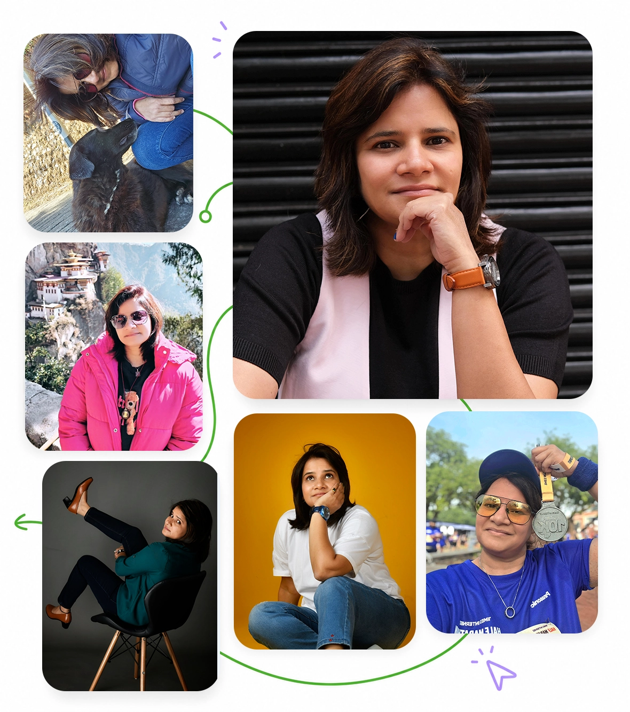

Alongside a two-decade career, I invested continuously in learning. From an MBA at Hult International Business School to globally recognized certifications including PRINCE2, ITIL, Six Sigma, ISO, and Digital Marketing, education has remained a constant companion throughout my professional journey.
About Nidhi S Mittal
More Than Marketing. More Than Titles. Still Becoming.
A journey through growth, leadership, loss, reinvention, and the lessons that emerged along the way.
The Story So Far.
Not Everything Worth Building Is A Business.

For over two decades, I've built brands, businesses, teams, and growth engines across India, the Middle East, the United States, and Australia.
But if you ask me what truly defines my journey, it isn't the boardrooms, campaigns, or leadership titles. It's resilience.
Life has tested me in ways no degree, certification, or corporate role could have prepared me for. Through personal loss, professional reinvention, and moments that demanded starting over, I learned that growth isn't just a business outcome - it's a human one.
Today, that perspective shapes everything I do.
As a Marketing & Growth Leader, Brand Strategist, Educator, Speaker, and Entrepreneur, I help businesses find clarity, build meaningful connections, and create sustainable growth. Whether advising founders, mentoring students, or shaping go-to-market strategies, my approach remains the same:
Simplify the complex. Stay human. Create impact.
Over the years, I've partnered with global organizations, fast-growing startups, educational institutions, and ambitious founders, helping transform ideas into stories, stories into communities, and communities into growth.
Outside work, I'm someone who finds meaning in the small things: photography walks, long runs, books with dog-eared pages, strong coffee, quiet reflection, and conversations that go beyond networking.
I care deeply about mentoring, education, animal welfare, and creating spaces where people feel seen and supported.
Some of my most important lessons didn't come from business school or boardrooms. They came from grief, rebuilding, uncertainty, and learning how to begin again.
That's why resilience, reinvention, and personal growth are themes I write and speak about increasingly today.
The Journey in Chapters
Not every milestone came from a job title.
What Life Taught Me
Professional milestones tell only part of the story. Navigating three significant personal losses taught me resilience, perspective, and gratitude. Those experiences transformed how I lead, work, and live, proving that growth is not defined by what happens to us, but by how we choose to respond.
What began as a passion project evolved into a meaningful parallel career. Over the years, I have trained and mentored more than 10,000 learners through institutions including IIT, IIM, Symbiosis, Masters' Union, Emeritus, and Growth School, helping professionals unlock their next chapter.
Beyond marketing and business, I am deeply passionate about storytelling. Through LinkedIn, speaking engagements, articles, and ongoing writing projects, I share lessons on growth, personal branding, resilience, leadership, and reinvention. I am currently working on my first book centered around rebuilding life after loss.
What Work Gave Me
Started in enterprise consulting and operations, where I discovered my obsession with structure, execution, and solving complex business problems. My years at Sopra Steria and DXC Technology shaped my discipline, leadership style, and global outlook.
From the British Council to global account leadership roles at DXC Technologies and my first startup, this phase was about creating from scratch - teams, functions, products, and ideas. It was also the period when I pursued my MBA at Hult International Business School and stepped fully into strategy, marketing, and growth.
Leading marketing for organizations like Tata Advanced Systems and JioSaavn, and later serving as Group CEO at BlueVector, gave me the opportunity to work at the intersection of brand, business, technology, and leadership. These were high-impact years professionally - and deeply transformative personally.
Today, through consulting, speaking, mentoring, and writing, I work with founders, startups, enterprises, and professionals across India, the USA, and MENA. My focus is simple: help people and brands grow with clarity, authenticity, and long-term thinking.
The Book I'm Writing
For years, people have told me: "You should write a book."
Not about marketing. Not about LinkedIn. Not about business.
But about what happens when life forces you to start over.
So I am finally writing it.
A story about loss, resilience, reinvention, identity, and the courage required to rebuild when everything familiar disappears.
It's still a work in progress.
But if you'd like to be among the first readers, I'd love to keep you updated.
Let's Create Together
How About A Coffee?
Some of my best ideas have come from conversations over coffee.
If something on this website resonated with you, let's continue the conversation.
Whether you are building a brand, rebuilding a career, navigating a life transition, or simply looking for clarity.
My inbox is open.
Because stories built this website.
And they might just build the next chapter too.